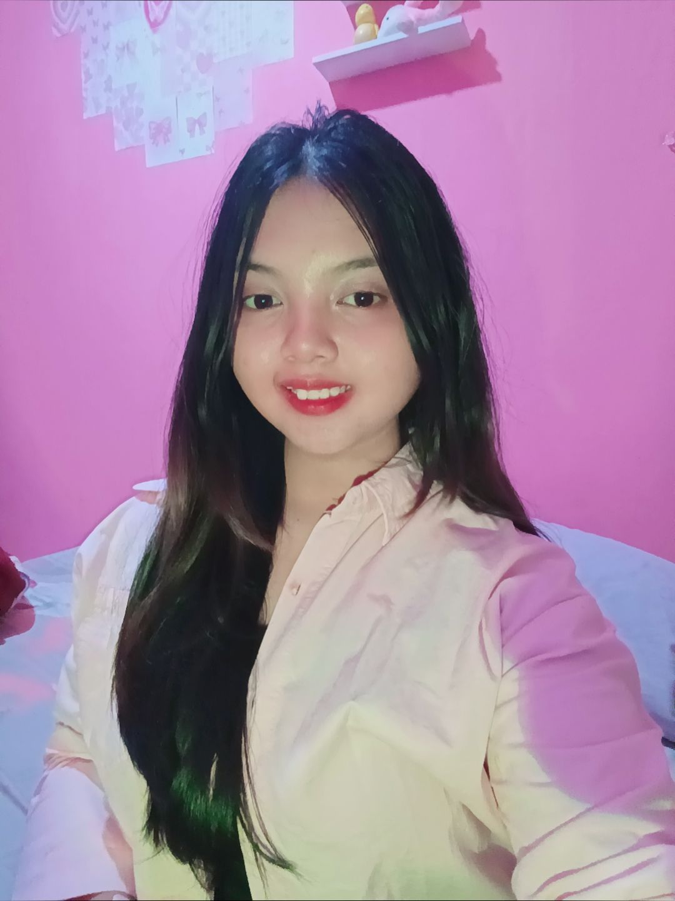

Curriculum Vitae

Ferissa Ilen Aswa Aulia
Data Pribadi
Nama : Ferissa Ilen Aswa Aulia
Tanggal Lahir : Kab. Semarang/29-09-2008
Jenis Kelamin : Perempuan
Agama : Islam
Kewarganegaraan : Indonesia
Data Pendidikan
2024–2029 SMKN 7 Semarang — Teknik Informatika
2021–2024 SMPN 2 Ungaran
2015–2021 SDN Sidomulyo 03
Pengalaman
- Pengembangan Website Pixel Vanguard Merancang dan membangun website Pixel Vanguard yang dapat digunakan sebagai platform untuk mendownload game.
- Pengembangan Website Dicoding
Mempelajari UI/UX Design dan Web Development melalui platform Dicoding, meliputi pembuatan wireframe, prototyping, desain antarmuka pengguna, serta pengembangan website modern dengan pendekatan user-friendly dan responsive design.Prestasi & Kejuaraan
✔ Juara 1 Lomba Menyanyi FLS2N - Tingkat Kabupaten
✔ Juara 1 Lomba Menyanyi Islami
✔ Juara 3 Lomba menyanyi Umum
✔ Medali Perak Lomba Paduan Suara
Keahlian
HTML5 / CSS3 · JavaScript · Figma · Canva · Cisco Packet Tracer · Git · UI/UX desain
"Jangan Lupa Untuk Selalu Berdoa." — Ferissa
ferisailen1@gmail.com
LinkedIn